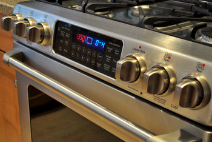

This is the best and easiest chocolate cake I've ever had and made so hold on to your pants!
Preheat your oven to 350 degrees F.
In a large bowl, mix together the cake and pudding mixes, sour cream, oil, beaten eggs and water. Stir in the chocolate chips and pour batter into a well greased 12 cup bundt pan.
Bake for 50 to 55 minutes, or until top is springy to the touch and a wooden toothpick inserted comes out clean. Cool cake thoroughly in pan at least an hour and a half before inverting onto a plate If desired, dust the cake with powdered sugar.
| Pan Size | Bundt Pan | 24 cupcakes | Two 8 x 1-1/2 inch rounds | 13in-9in-2in sheet cake |
|---|---|---|---|---|
| Time | 50-55 minutes | 18-23 minutes | 35-40 minutes | 30-35 minutes |
I do not own the copyright for this recipe information. Recipe is sourced from All Recipes.